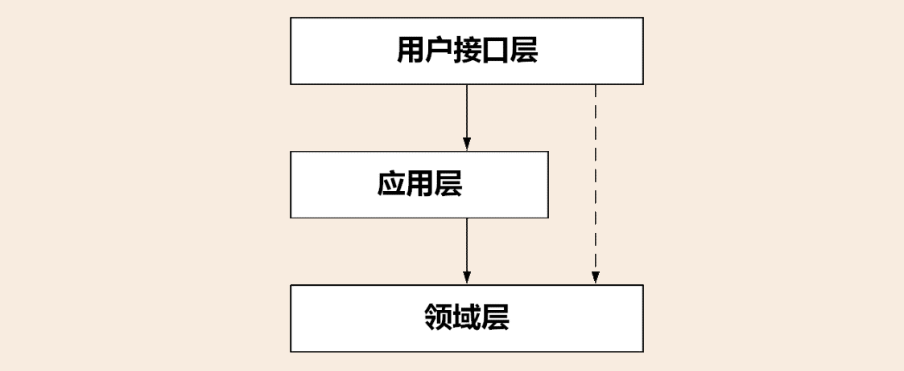
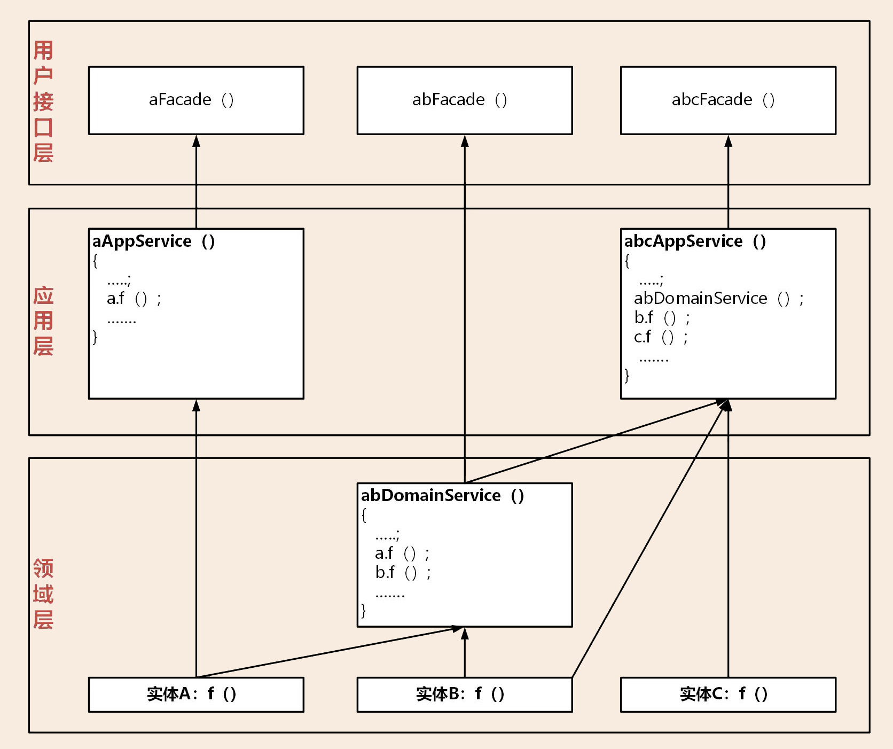
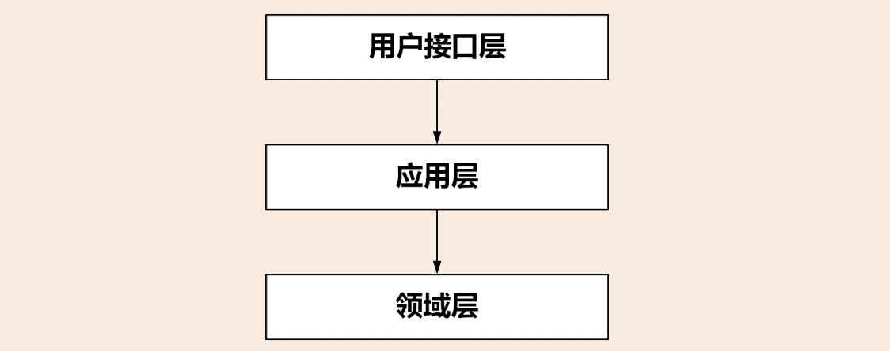

- 00 开篇词 学好了DDD，你能做什么？.md.html
- 01 领域驱动设计：微服务设计为什么要选择DDD.md.html
- 02 领域、子域、核心域、通用域和支撑域：傻傻分不清？.md.html
- 03 限界上下文：定义领域边界的利器.md.html
- 04 实体和值对象：从领域模型的基础单元看系统设计.md.html
- 05 聚合和聚合根：怎样设计聚合？.md.html
- 06 领域事件：解耦微服务的关键.md.html
- 07 DDD分层架构：有效降低层与层之间的依赖.md.html
- 08 微服务架构模型：几种常见模型的对比和分析.md.html
- 09 中台：数字转型后到底应该共享什么？.md.html
- 10 DDD、中台和微服务：它们是如何协作的？.md.html
- 11 DDD实践：如何用DDD重构中台业务模型？.md.html
- 12 领域建模：如何用事件风暴构建领域模型？.md.html
- 13 代码模型（上）：如何使用DDD设计微服务代码模型？.md.html
- 14 代码模型（下）：如何保证领域模型与代码模型的一致性？.md.html
- 15 边界：微服务的各种边界在架构演进中的作用？.md.html
- 16 视图：如何实现服务和数据在微服务各层的协作？.md.html
- 17 从后端到前端：微服务后，前端如何设计？.md.html
- 18 知识点串讲：基于DDD的微服务设计实例.md.html
- 19 总结（一）：微服务设计和拆分要坚持哪些原则？.md.html
- 20 总结（二）：分布式架构关键设计10问.md.html
- 答疑：有关3个典型问题的讲解.md.html
- 结束语 所谓高手，就是跨过坑和大海.md.html
- 捐赠
16 视图：如何实现服务和数据在微服务各层的协作？
你好，我是欧创新。
在 DDD 分层架构和微服务代码模型里，我们根据领域对象的属性和依赖关系，将领域对象进行分层，定义了与之对应的代码对象和代码目录结构。分层架构确定了微服务的总体架构，微服务内的主要对象有服务和实体等，它们一起协作完成业务逻辑。
那在运行过程中，这些服务和实体在微服务各层是如何协作的呢？今天我们就来解剖一下基于 DDD 分层架构的微服务，看看它的内部结构到底是什么样的。
服务的协作
1. 服务的类型
我们先来回顾一下分层架构中的服务。按照分层架构设计出来的微服务，其内部有 Facade 服务、应用服务、领域服务和基础服务。各层服务的主要功能和职责如下。
Facade 服务：位于用户接口层，包括接口和实现两部分。用于处理用户发送的 Restful 请求和解析用户输入的配置文件等，并将数据传递给应用层。或者在获取到应用层数据后，将 DO 组装成 DTO，将数据传输到前端应用。
应用服务：位于应用层。用来表述应用和用户行为，负责服务的组合、编排和转发，负责处理业务用例的执行顺序以及结果拼装，对外提供粗粒度的服务。
领域服务：位于领域层。领域服务封装核心的业务逻辑，实现需要多个实体协作的核心领域逻辑。它对多个实体或方法的业务逻辑进行组合或编排，或者在严格分层架构中对实体方法进行封装，以领域服务的方式供应用层调用。
基础服务：位于基础层。提供基础资源服务（比如数据库、缓存等），实现各层的解耦，降低外部资源变化对业务应用逻辑的影响。基础服务主要为仓储服务，通过依赖倒置提供基础资源服务。领域服务和应用服务都可以调用仓储服务接口，通过仓储服务实现数据持久化。
2. 服务的调用
我们看一下下面这张图。微服务的服务调用包括三类主要场景：微服务内跨层服务调用，微服务之间服务调用和领域事件驱动。

微服务内跨层服务调用
微服务架构下往往采用前后端分离的设计模式，前端应用独立部署。前端应用调用发布在 API 网关上的 Facade 服务，Facade 定向到应用服务。应用服务作为服务组织和编排者，它的服务调用有这样两种路径：
第一种是应用服务调用并组装领域服务。此时领域服务会组装实体和实体方法，实现核心领域逻辑。领域服务通过仓储服务获取持久化数据对象，完成实体数据初始化。
第二种是应用服务直接调用仓储服务。这种方式主要针对像缓存、文件等类型的基础层数据访问。这类数据主要是查询操作，没有太多的领域逻辑，不经过领域层，不涉及数据库持久化对象。
微服务之间的服务调用
微服务之间的应用服务可以直接访问，也可以通过 API 网关访问。由于跨微服务操作，在进行数据新增和修改操作时，你需关注分布式事务，保证数据的一致性。
领域事件驱动
领域事件驱动包括微服务内和微服务之间的事件（详见 [第 06 讲]）。微服务内通过事件总线（EventBus）完成聚合之间的异步处理。微服务之间通过消息中间件完成。异步化的领域事件驱动机制是一种间接的服务访问方式。
当应用服务业务逻辑处理完成后，如果发生领域事件，可调用事件发布服务，完成事件发布。
当接收到订阅的主题数据时，事件订阅服务会调用事件处理领域服务，完成进一步的业务操作。
3. 服务的封装与组合
我们看一下下面这张图。微服务的服务是从领域层逐级向上封装、组合和暴露的。

基础层
基础层的服务形态主要是仓储服务。仓储服务包括接口和实现两部分。仓储接口服务供应用层或者领域层服务调用，仓储实现服务，完成领域对象的持久化或数据初始化。
领域层
领域层实现核心业务逻辑，负责表达领域模型业务概念、业务状态和业务规则。主要的服务形态有实体方法和领域服务。
实体采用充血模型，在实体类内部实现实体相关的所有业务逻辑，实现的形式是实体类中的方法。实体是微服务的原子业务逻辑单元。在设计时我们主要考虑实体自身的属性和业务行为，实现领域模型的核心基础能力。不必过多考虑外部操作和业务流程，这样才能保证领域模型的稳定性。
DDD 提倡富领域模型，尽量将业务逻辑归属到实体对象上，实在无法归属的部分则设计成领域服务。领域服务会对多个实体或实体方法进行组装和编排，实现跨多个实体的复杂核心业务逻辑。
对于严格分层架构，如果单个实体的方法需要对应用层暴露，则需要通过领域服务封装后才能暴露给应用服务。
应用层
应用层用来表述应用和用户行为，负责服务的组合、编排和转发，负责处理业务用例的执行顺序以及结果的拼装，负责不同聚合之间的服务和数据协调，负责微服务之间的事件发布和订阅。
通过应用服务对外暴露微服务的内部功能，这样就可以隐藏领域层核心业务逻辑的复杂性以及内部实现机制。应用层的主要服务形态有：应用服务、事件发布和订阅服务。
应用服务内用于组合和编排的服务，主要来源于领域服务，也可以是外部微服务的应用服务。除了完成服务的组合和编排外，应用服务内还可以完成安全认证、权限校验、初步的数据校验和分布式事务控制等功能。
为了实现微服务内聚合之间的解耦，聚合之间的服务调用和数据交互应通过应用服务来完成。原则上我们应该禁止聚合之间的领域服务直接调用和聚合之间的数据表关联。
用户接口层
用户接口层是前端应用和微服务之间服务访问和数据交换的桥梁。它处理前端发送的 Restful 请求和解析用户输入的配置文件等，将数据传递给应用层。或获取应用服务的数据后，进行数据组装，向前端提供数据服务。主要服务形态是 Facade 服务。
Facade 服务分为接口和实现两个部分。完成服务定向，DO 与 DTO 数据的转换和组装，实现前端与应用层数据的转换和交换。
4. 两种分层架构的服务依赖关系
现在我们回顾一下 DDD 分层架构，分层架构有一个重要的原则就是：每层只能与位于其下方的层发生耦合。
那根据耦合的紧密程度，分层架构可以分为两种：严格分层架构和松散分层架构。在严格分层架构中，任何层只能与位于其直接下方的层发生依赖。在松散分层架构中，任何层可以与其任意下方的层发生依赖。
下面我们来详细分析和比较一下这两种分层架构。
松散分层架构的服务依赖
我们看一下下面这张图，在松散分层架构中，领域层的实体方法和领域服务可以直接暴露给应用层和用户接口层。松散分层架构的服务依赖关系，无需逐级封装，可以快速暴露给上层。
但它存在一些问题，第一个是容易暴露领域层核心业务的实现逻辑；第二个是当实体方法或领域服务发生服务变更时，由于服务同时被多层服务调用和组合，不容易找出哪些上层服务调用和组合了它，不方便通知到所有的服务调用方。

我们再来看一张图，在松散分层架构中，实体 A 的方法在应用层组合后，暴露给用户接口层 aFacade。abDomainService 领域服务直接越过应用层，暴露给用户接口层 abFacade 服务。松散分层架构中任意下层服务都可以暴露给上层服务。

严格分层架构的服务依赖
我们看一下下面这张图，在严格分层架构中，每一层服务只能向紧邻的上一层提供服务。虽然实体、实体方法和领域服务都在领域层，但实体和实体方法只能暴露给领域服务，领域服务只能暴露给应用服务。
在严格分层架构中，服务如果需要跨层调用，下层服务需要在上层封装后，才可以提供跨层服务。比如实体方法需要向应用服务提供服务，它需要封装成领域服务。
这是因为通过封装你可以避免将核心业务逻辑的实现暴露给外部，将实体和方法封装成领域服务，也可以避免在应用层沉淀过多的本该属于领域层的核心业务逻辑，避免应用层变得臃肿。还有就是当服务发生变更时，由于服务只被紧邻上层的服务调用和组合，你只需要逐级告知紧邻上层就可以了，服务可管理性比松散分层架构要好是一定的。

我们还是看图，A 实体方法需封装成领域服务 aDomainService 才能暴露给应用服务 aAppService。abDomainService 领域服务组合和封装 A 和 B 实体的方法后，暴露给应用服务 abAppService。

数据对象视图
在 DDD 中有很多的数据对象，这些对象分布在不同的层里。它们在不同的阶段有不同的形态。你可以再回顾一下 [第 04 讲]，这一讲有详细的讲解。
我们先来看一下微服务内有哪些类型的数据对象？它们是如何协作和转换的？
数据持久化对象 PO(Persistent Object)，与数据库结构一一映射，是数据持久化过程中的数据载体。
领域对象 DO（Domain Object），微服务运行时的实体，是核心业务的载体。
数据传输对象 DTO（Data Transfer Object），用于前端与应用层或者微服务之间的数据组装和传输，是应用之间数据传输的载体。
视图对象 VO（View Object），用于封装展示层指定页面或组件的数据。
我们结合下面这张图，看看微服务各层数据对象的职责和转换过程。

基础层
基础层的主要对象是 PO 对象。我们需要先建立 DO 和 PO 的映射关系。当 DO 数据需要持久化时，仓储服务会将 DO 转换为 PO 对象，完成数据库持久化操作。当 DO 数据需要初始化时，仓储服务从数据库获取数据形成 PO 对象，并将 PO 转换为 DO，完成数据初始化。
大多数情况下 PO 和 DO 是一一对应的。但也有 DO 和 PO 多对多的情况，在 DO 和 PO 数据转换时，需要进行数据重组。
领域层
领域层的主要对象是 DO 对象。DO 是实体和值对象的数据和业务行为载体，承载着基础的核心业务逻辑。通过 DO 和 PO 转换，我们可以完成数据持久化和初始化。
应用层
应用层的主要对象是 DO 对象。如果需要调用其它微服务的应用服务，DO 会转换为 DTO，完成跨微服务的数据组装和传输。用户接口层先完成 DTO 到 DO 的转换，然后应用服务接收 DO 进行业务处理。如果 DTO 与 DO 是一对多的关系，这时就需要进行 DO 数据重组。
用户接口层
用户接口层会完成 DO 和 DTO 的互转，完成微服务与前端应用数据交互及转换。Facade 服务会对多个 DO 对象进行组装，转换为 DTO 对象，向前端应用完成数据转换和传输。
前端应用
前端应用主要是 VO 对象。展现层使用 VO 进行界面展示，通过用户接口层与应用层采用 DTO 对象进行数据交互。
© 2019 - 2023 Liangliang Lee. Powered by gin and hexo-theme-book.